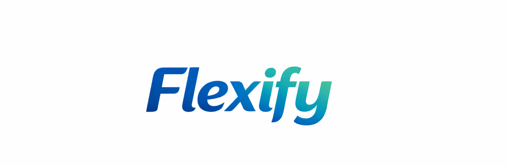
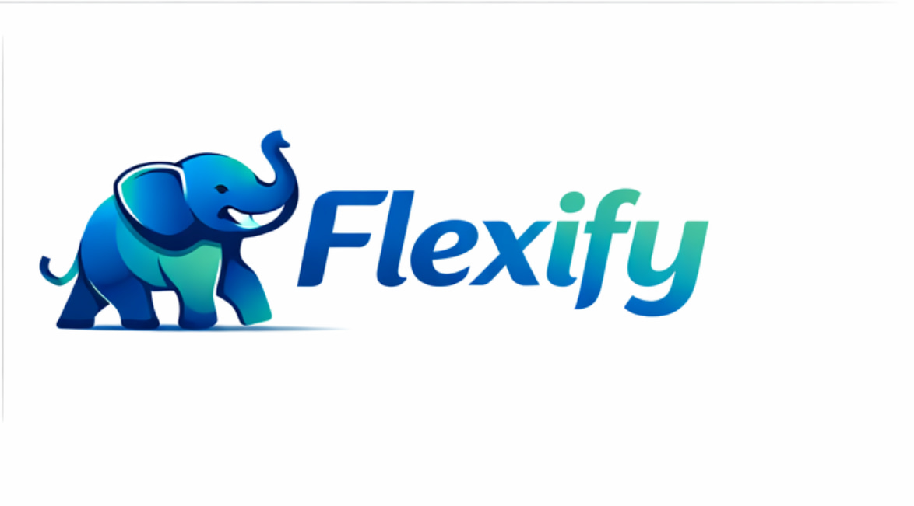
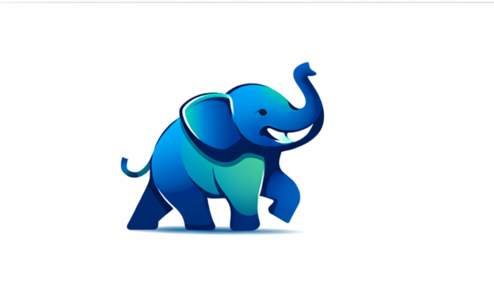

Die erste KI-gestützte Plattform, die Meetings optimiert, Zeit spart und deine Unternehmensprozesse flexibler macht.
Jetzt Enterprise-Lizenz anfragenDie Flexify GmbH ist ein innovatives Wiener Start-Up mit einer klaren Vision: Wir machen große Unternehmen agiler durch intelligente KI-gestützte Organisations-Tools.
Unsere Marke „Flexify“ steht für Flexibilität, Effizienz und moderne Zusammenarbeit. Gegründet in Wien, Österreich, beschäftigen wir derzeit 12 engagierte Mitarbeiter:innen, die mit Leidenschaft an der Weiterentwicklung unserer Plattform arbeiten.
Art der Software: Business-Software für Meeting- und Organisationsoptimierung
Flexify ist die innovative KI-Plattform, die speziell für Großunternehmen entwickelt wurde. Sie automatisiert und optimiert den gesamten Meeting-Prozess – von der Vorbereitung bis zur Nachbereitung – und sorgt so für spürbare Zeitersparnis und höhere Produktivität.
Zielgruppe: Großunternehmen, Projektmanager:innen und Teamleiter:innen, die ihre Meeting-Kultur effizienter und effektiver gestalten möchten.
Flexify wird als Enterprise-Abonnement angeboten – flexibel monatlich oder jährlich abrechenbar. Interessierte Unternehmen können eine kostenlose Testphase oder eine persönliche Demo anfordern, um die Vorteile direkt zu erleben.
Wir bei Flexify legen großen Wert auf Inklusion. Unsere Website orientiert sich an den Web Content Accessibility Guidelines (WCAG) 2.2 Level AA, um allen Nutzer:innen ein barrierearmes Erlebnis zu bieten.
Umgesetzte Maßnahmen:
Wir verbessern die Barrierefreiheit kontinuierlich. Bei Fragen oder Hinweisen erreichen Sie uns jederzeit gerne.
Alle Inhalte dieser Website werden rechtmäßig und transparent verwendet. Für jedes Medium liegen die entsprechenden Rechte oder Lizenzen vor.
Verwendete Medien und Lizenzen:
Wir danken allen Lizenzgeber:innen für ihre hochwertigen, frei nutzbaren Ressourcen. Bei Fragen zu einzelnen Elementen stehen wir Ihnen gerne zur Verfügung.

Bedeutung: Die Kombination aus dynamischer Schrift und flexiblem Pfeil-Icon symbolisiert Agilität und Vorwärtsbewegung.
Nizza-Klasse 9: Software; Applikationen für mobile Geräte.

Bedeutung: Das stilisierte Flex-Symbol steht als Icon für unser Versprechen: 100% Fokus auf flexible Organisation.
Nizza-Klasse 9: Herunterladbare Software.
Definition: „Dynamic Blue“ (Hex: #42a5f5).
Bedeutung: Strahlt Vertrauen, Professionalität und Dynamik aus.
Nizza-Klasse 42: Software-as-a-Service (SaaS); Technologische Beratung.
Vor der Festlegung der Marke wurde eine Ähnlichkeitsrecherche durchgeführt, um Markenrechtsverletzungen auszuschließen.